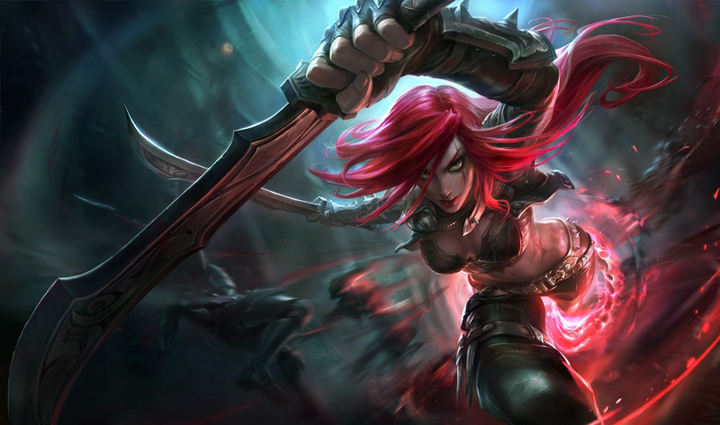
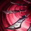
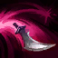

Katarina

Présentation
Décisive dans son jugement et redoutable au combat, Katarina est une assassin noxienne de tout premier ordre. Fille aînée du légendaire général Du Couteau, elle a révélé ses talents en éliminant rapidement des ennemis pris au dépourvu. Son ambition brûlante l'a poussée à poursuivre des cibles lourdement protégées, quitte à mettre ses alliés en danger mais quelle que soit la mission, Katarina n'hésitera jamais à accomplir son devoir au cœur d'un tourbillon de dagues dentelées.
Informations
- Rôle : Milieu
- Type : Assassin
- Origine : Noxus
Compétences
-

Passif Voracité: Éliminer un champion peu après lui avoir infligé des dégâts réduit les temps de recharge actuels des sorts de Katarina. De plus, chaque fois qu'elle récupère un poignard, elle frappe les ennemis proches avec des dégâts magiques et réduit le temps de recharge restant de Shunpo.
-

Poignard rebondissant: Lance un poignard sur un ennemi ciblé, infligeant des dégâts magiques. Le poignard peut ricocher vers deux ennemis proches supplémentaires, puis se plante au sol.
-
Préparation: Katarina obtient une vitesse de déplacement bonus et devient éthérée pendant un court instant, tout en lançant un poignard dans les airs au-dessus d'elle.
-
Shunpo: Se téléporte instantanément vers une unité ou un poignard ciblé, infligeant des dégâts magiques à l'ennemi le plus proche.
-
Lotus mortel: Katarina canalise brièvement, lançant une rafale de poignards sur les 3 champions ennemis les plus proches, infligeant des dégâts répétés et appliquant Blessures graves.